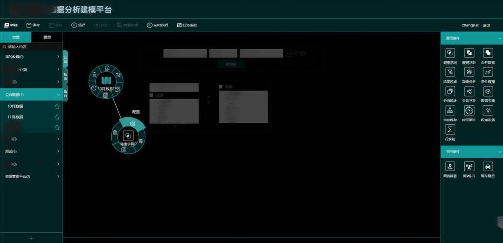
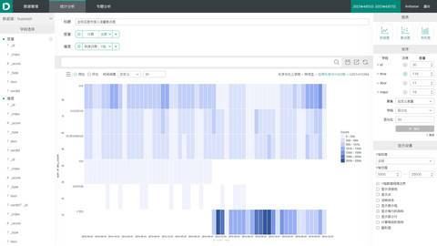

自我评价
具有3年 web 项目开发经验，项目能力强，可快速适应开发环境，有项目发现问题和解决问题的经验。
在工作中以质量和细节为导向，对工作有责任心和积极性。 追寻挑战，学习和成长的机会。
项目介绍
2017~
大数据分析建模产品的开发及重构

描述：该项目在2017年度正式启动，主要使用angularJS、jQuery UI、d3.js
技术构建基于拖拽交互的建模数据分析工具。产品主要是为非技术人员构建可视化数据分析工具。
包含常用集合运算（如交、并、差运算）或聚合运算（频率分析）等。
由于业务功能的需求，该项目于2018年4月份由我主导前端部分，使用Vue.js进行重构，
在保证原有版本的兼容性的基础上，对数据源、模型管理模块进行功能扩充，通过增加右键菜单，
给与用户管理数据源、 对数据源增加分组，自定义收藏数据源等功能。
在使用vue进行重构的过程中，了解并使用vue的基本概念，如：生命周期、计算属性、侦听属性、
混入（mixins）方法、基于vue-router库的路由设置及自定义组件的使用。
关键词：D3.js、Vue、vue-router、jQuery、vuedraggable、element-ui、less
2019-01
自定义组件封装
描述：这个项目主要是对组件的封装
主要组件包括：按钮、文本输入框、布局、右键菜单
关键词：vue、CSS3、sass、ES6
源码链接
2019-02
皮卡丘绘制动画
描述：使用CSS3绘制皮卡丘表情图，使用jQuery将绘制图形的css代码逐个显示在页面中，造成动画绘制图片的效果。
关键词：CSS3、jQuery
源码链接
预览链接
2018/10
参与公司多个项目开发
描述：由于公司业务的需要，参与多个项目的开发。主要负责项目的某一个模块，
根据项目整体情况由项目负责人分发任务模块。主要使用vue-cli进行项目搭建，
使用vue-router进行路由划分，主要页面组件使用element-ui进行快速开发，
根据功能需要有统计图表使用ECharts进行快速绘图。
关键词：vue、vue-router、ECharts、element-ui、ES6
2017/3-7
基于Kibana4的插件开发

描述：该项目在kibana4的基础上，对绘制图表部分和展示图表部分进行了个性化定制：1. 利用 d3.js
在原有图表的基础上增加热力图、树状图等原生kibana不包含的图表。2. 完全重新构建图表创建的流程，
将下拉点击进行图表配置的形式改为拖拽的形式。
关键词：angularJS、Jquery、D3、MVC